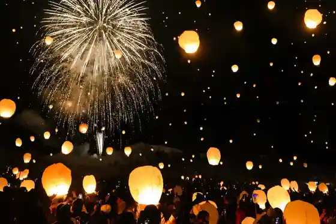
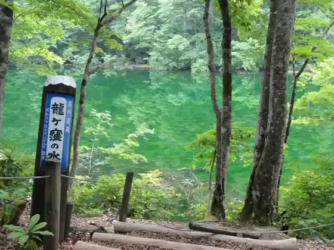

Tsunan Rantan to Yozora Wo Irodoru Hikari no Kyoen
Tsunan, Niigata · 025-765-4611 · Official / source link

Ryugakubo no Ike
Tsunan, Niigata · 025-765-5585 · Official / source link

Tsunan Himawari Plaza 2026
Tsunan, Niigata · 025-765-5585 · Official / source link
Daichi no Geijutsu Matsuri Echigo Tsumari Atotoriennare 2027
Tsunan, Niigata · 025-761-7767 · Official / source link
Hikyo Akiyama Sato
Tsunan, Niigata · 025-765-5585 · Official / source link
Naeba Yama Koakazawa Tozanguchi / Oaka Sawanobori Yamaguchi
Tsunan, Niigata · 025-765-5585 · Official / source link
Dankyu Sakura
Tsunan, Niigata · 025-765-5585 · Official / source link
Kuahausu Tsunan
Tsunan, Niigata · 025-765-3711 · Official / source link
Ken Tama Fudo Mikoto
Tsunan, Niigata · 025-765-3886 · Official / source link
Tsunan Kanko Bussan Kan
Tsunan, Niigata · 025-765-5008 · Official / source link
Machinaka Opunsupesu Dandan
Tsunan, Niigata · 080-3534-1296 · Official / source link
Dai 13 Kai Niigataken Doburoku Hakurankai
Tsunan, Niigata · 025-765-4611 · Official / source link
Yuki Sanpo 2027 Daichi to Ningakizui Ta Nagame
Tsunan, Niigata · Official / source link
Tsunan no Yuki Shitani Njin Hori Kyoso
Tsunan, Niigata · Official / source link
Tsunan Ken Tama Park
Tsunan, Niigata · 025-765-5585 · Official / source link
Tsunan Jozo (Kabu) / (Kiri no to)
Tsunan, Niigata · 025-765-5252 · Official / source link
Ken Kurahashi
Tsunan, Niigata · 025-765-5585 · Official / source link
Echigo Sorin Shrine candle night2026 Tanya no Yume 2nd Edition
Tsunan, Niigata · 025-765-2823 · Official / source link
Mujirushiryohin Tsunan Campground
Tsunan, Niigata · 03-5950-3660 · Official / source link
Ribasaido Tsunan
Tsunan, Niigata · 025-765-4733 · Official / source link
Nyu Guriinpia Tsunan Campground
Tsunan, Niigata · 025-765-4611 · Official / source link
Ken Kura
Tsunan, Niigata · 025-765-5585 · Official / source link
Naeba Shuzo / (Naeba Yama)
Tsunan, Niigata · 025-765-2011 · Official / source link
Tsunan Maizo Bunkazai Center “ Umorea ”
Tsunan, Niigata · 025-755-7011 · Official / source link
Kawa no Lookout
Tsunan, Niigata · 025-765-1600 · Official / source link
Tsunan Shinrin Serapii Kichi
Tsunan, Niigata · 025-765-3115 · Official / source link
Nakako Cherry Blossoms
Tsunan, Niigata · 025-765-5585 · Official / source link
Tsunan no to Jomon no Experience Jisshu Kan (Najomon)
Tsunan, Niigata · 025-765-5511 · Official / source link
Hebi Fuchi Falls
Tsunan, Niigata · 025-765-5585 · Official / source link
Sora no Lookout
Tsunan, Niigata · 025-765-1600 · Official / source link
Agayama - Akiyama Sato Ritsudai Akazawa Shogakko -
Tsunan, Niigata · 025-761-7767 · Official / source link
Gesen Watari Hon Village Danchi
Tsunan, Niigata · 025-765-5585 · Official / source link
Yama Gen Mokko
Tsunan, Niigata · 025-767-2091 · Official / source link
Ken Kura no Dai Tochi
Tsunan, Niigata · 025-765-5585 · Official / source link